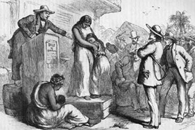
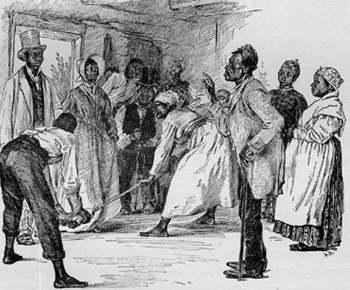

|
In the United States, unlike the Latin American countries, marriage between
slaves had no legal foundation. The absence of legal bonds and the reluctance of
national and state church organizations to endorse motions against the
separation of slave spouses have encouraged the view that slave marriages were
unstable and subject to the whim of slaveholders and slaves alike. Slave owners
could, if they chose, select mates and break unions whenever their financial
calculus dictated. According to this formulation, which received scholarly
impetus from the writings of sociologist E. Franklin Frazier and public currency
in the Moynihan Report on the status of black families in the 1960s, slaves, as
victims of this system, had little influence in the shaping of their own family
lives and fell into a pattern of serial marriage at best, and promiscuity at
worst.
Most scholars have been uncomfortable with this simplistic assessment of slave
marriage and family life and offer several competing hypotheses about the
attitudes and behavior of slaves and the relative influence of owners in
determining slave experience. They have focused on four interrelated questions.
What direct role did owners play in the selection of mates and in the stability
of unions once formed? Did slaves adopt the attitudes and roles of owners in
creating their own familial structures or did they retain some cultural
autonomy? How successful were slaves in achieving the norms they established?
Did the usurpation of the traditional male role of provider affect the quality
of husband-wife relations?
|

Slave marriages were always tenuous, and could
easily be ended by the sale of one partner to another state, as
in this engraving.
|
To a large extent the scholarly debate has been shaped by the problem of
evidence. Travelers' accounts, planters' correspondence and farm manuals, and
the slave narratives provide descriptions of rituals of courtship and marriage
and some insight into the attitudes of slave spouses. But these sources describe
a myriad of life experiences and offer powerful testimony to the variety of
unions, both marital and nonmarital, formed by slaves. Systematic documentation
of slave marriages is rare. Unlike the births and deaths that were regularly
recorded by many owners, the marriages of slaves escaped notation. Among the
most valuable sources for historians are the post-emancipation records of the
Freedmen's Bureau, which register tens of thousands of slave marriages.
The single factor that most shaped the quality of a marriage was the ability of
slaves to find mates on the same plantation or farm. Unbalanced sex ratios, the
size of plantation populations, the degree of kin embeddedness at a particular
site, and the relative geographic isolation of the community all affected the
size of the pool of potential mates for slaves. Bondsmen on plantations with an
imbalance between the sexes or a very small population could not expect to find
a mate on the same plantation and searched "abroad" for a partner.
In unions between spouses owned by two individuals, or located at two separate
sites, the frequency of contact between spouses and between a father and his
children depended upon the policies of the owners and the geographic distance
between partners. Since the children of such unions resided with their mother,
for most of the week she served as both father and mother, particularly in
fulfilling the role of provider. Historians differ, as slaves and slave owners
probably differed, on the relative advantages and disadvantages of "broad"
unions. On the one hand, a slave husband would not be subjected to the stress of
seeing his spouse suffer physical or sexual abuse at the hands of the owner or
overseer. At the same time, the separation encouraged independence for slave
women who by necessity provided for their families. Spouses who belonged to
different owners were more likely to be separated by sale or inheritance
dispersals. From the perspective of the husband's owner, a marriage "abroad"
would not contribute to his slave population and may have contributed to
problems of control of the slave man who traveled between plantations.
In the selection of a mate, slaves were further limited by the cultural rules
defining appropriate partners. Unlike their owners, slaves avoided marriage
between first cousins and may have practiced taboos against marriage between
other kin. This avoidance of first-cousin marriage has been seen by some
historians as an indication of the autonomy slaves exercised in mate selection,
as well as a sign that slaves did not merely imitate the marital practices of
their owners.
Though evidence on slave courtship is sparse, some slave narratives recount a
romantic ritual of courtship, with young men competing for the attention of
young women. The crowding of slave cabins and the narrow confines of the quarter
must have limited the opportunities for young people to court. And in situations
where the potential partners resided on separate farms or plantations, these
instances may have been even more rare. Nonetheless, many slave marriages were
not formalized until after the woman had borne her first child. Illegitimacy
apparently carried no stigma in the slave quarter and most women went on after
the birth to form stable and monogamous unions. Though many women had
intercourse prior to marriage, this in no way proves that slave women were
promiscuous. Evidence on the age at which women bore their first child, by
several estimates between age nineteen and twenty-one, suggests that they
delayed intercourse at least three years after menarche. Once united, slaves
placed a great value on fidelity. Adultery was considered a serious offense in
the slave quarter.
|

An artist's depiction of a "broomstick wedding," a custom where
newlywed slaves would jump over a broomstick. The origins of this custom
are not certain, though it is widely assumed to have come from West Africa.
|
Normally, slave parents, not masters, supervised marriages, and with the owner's
consent, unions were formalized by a variety of rituals. One common practice was
"jumping the broomstick." Other slaves, particularly household servants, were
wed in the Big House, some in the hand-me-down wedding dress of the mistress.
Some slave owners performed marriages themselves, other delegated this task to
the churches. Black and white ministers of all Southern Christian congregations
regularly encouraged and performed marriages.
Unlike most marriages in other societies, and certainly in contrast to the
marriages of their owners, property played little role in the choice of slave
partners. Slave women brought to their marriages about as much material goods as
their husbands and by virtue of their ability to contribute to the family
economy had as much influence in family decisions as men. Both men and women
acted as providers who supplemented the family's food supply. This produced
greater equality in the marriage. Because slave women needed always to be
prepared for the possibility that they might lose their spouses, slave women may
have developed an independence that made them more willing to separate from
husbands who were incompatible.
Marriage vows for slaves were occasionally modified to recognize the
vulnerability of slaves to sale. "Until death or distance do you part"
acknowledged that slave spouses could indeed be sold. Slaves who resided in the
slave-exporting states in the upper South were those most likely to face this
separation. One measure of the impact of the westward expansion of cotton on
slaves' marriages was derived by Herbert G. Gutman from the Freedmen's Bureau
marriage registers. Slaves in the upper South in 1865 reported long-lasting
unions, and Gutman suggests that these marriages provided a model of "marital,
familial, and kin obligation" that was transmitted by each generation of slaves.
Bondsmen in the lower South who registered marriages in 1864 and 1865, however,
provided a grim testimony of the impact of westward expansion. One in four of
these unions involved at least one partner who had been forcibly separated from
a spouse.
A variety of circumstances, demographic and geographic, affected slave marriages
and significantly determined their form and stability. Unions between spouses
who belonged to different owners clearly had a different quality than those
between co-resident spouses. Both slaves and slave owners probably held stable
two-parent families as the desired norm, but again, circumstances could
intervene to break up spouses and separate parents from their children. Most
devastating to unions was the internal migration of slaves to the cotton
Southwest. Limited evidence on slave unions has restricted the work of scholars
to the domestic lives of bondsmen in the nineteenth century. Much remains to be
learned about marriage practices of newly arrived Africans and the first
generation of American-born slaves. Such information would provide valuable
insights into the evolution of the institution of slave marriages.
Source: Randall M. Miller and John David Smith, eds. Dictionary of
Afro-American Slavery (Westport, CT: Praeger, 1997), 435-38.
|